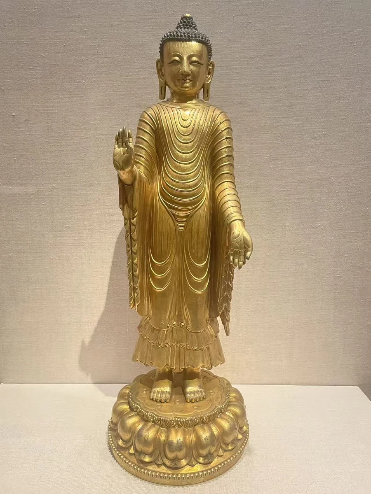
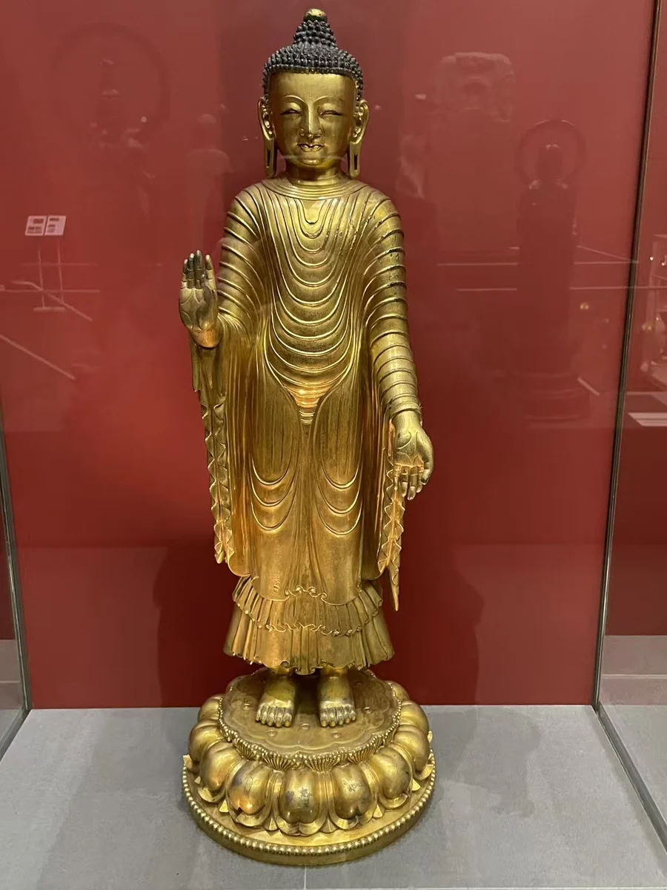

OBJECT NOTE
旃檀瑞像传统佛立像
明宣德时期，1426—1435年

红色背景照片摄于2024年12月巴黎赛努奇博物馆；白色背景照片摄于2025年8月纽约大都会的借展现场。两组照片记录同一件M.C.686。
作品资料
- 原题名
- Standing Buddha in the Udayana Image Tradition
- 年代
- 明宣德时期，1426—1435年
- 材料
- 铜鎏金
- 尺寸
- 高63.5厘米
- 收藏／展出
- 赛努奇博物馆 · 在纽约大都会艺术博物馆展出
- 馆藏号
- M.C. 686
- 地区与传统
- 中国宫廷：具体工坊未定（地域归属）
现场资料
基本资料依据现场展签整理。Standing Buddha in the Udayana Image Tradition；馆藏号 M.C. 686。
红色背景照片摄于2024年12月巴黎赛努奇博物馆；白色背景照片摄于2025年8月纽约大都会的借展现场。两组照片记录同一件M.C.686。
其他现场视角


资料与来源
作品基本资料据现场展签及下列馆方记录整理；文字中的观看描述基于这里的现场照片。